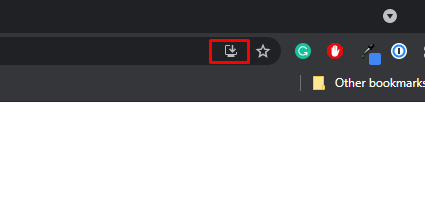
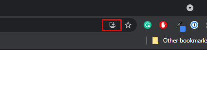

Back
Windows Install - For Chrome
To install the app on Windows, add the app as a PWA.
Click on the download button in the right of the menu bar.
To install the app on Windows, add the app as a PWA.
Click on the download button in the right of the menu bar.
